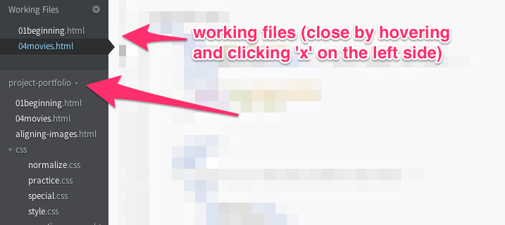

Content is King
Lesson Number 17, October 3, 2014
Due For This Class
- Project #4
- Work through the first 13 (Learn CSS Layout lessons (stop after you have read the percent width page).
Time to Get Inspired
As the course goes on, I will be asking you to start marking things you find interesting on the web. For example, you might want to save designs you find especially cool, or articles you loved, or photos you wanted to use.
Everyone in the class will need to sign up for an Evernote account.
Then, install the Evernote Web Clipper on your browser.
You can now use the web clipper to document cool things you find on the web!
Starting points for inspiration
- Awwwards
- Dribbble
- Webby Awards
- ThemeForest
- Wordpress.com Themes
- A List Apart
- One Page Love
- Smashing Magazine
- CodePen - awesome experimenty things!
- CoDrops - awesome tutorials, and downloadable "blueprints".
A Note on Templates / Downloadable Themes
The purpose of this class is for you to learn to design your own websites. As you look around, you will no doubt find free themes and pre-styled web templates. With the exception of CSS frameworks (which we will learn in class), using a premade theme is unacceptable for your final project.
If you are interested in downloading a pre-built theme to play around with it and try to learn how it is built - I highly encourage this. Tell me! Add it to your inspiration journal! Add it to your project portfolio! Share what you've built with me! If there's a cool feature that you're trying to duplicate, I might be able to point you in a helpful direction.
Class Activity
- Click this link to get to our Layout Practice Repo
Fork the repository (at the top-right of the repo, under the toolbar you should see a button for "Fork")
Clone your repository to your computer.
How?- Github for Mac / Windows - click the "+" sign at the top-left of the window. In the window that appears, change to the "clone" view. You will see all the repositories that are part of your account. Click on "layout-practice", then clone it into your "sites" folder
- SourceTree - on GitHub, go to the home page of your repository. On the right sidebar, there is an area with a url you can use to clone the repo. Copy this url. Now, open SourceTree. In the bookmarks window (before you're in your project view), the top-left icon is something that looks like a barrel with a plus-sign on it. Click this. Paste your URL in the first box, then choose where you would like the repository to go.
Open Brackets. Close any of your open working projects. Then, click the top label of the file list to change your project. 
Choose your layout-practice folder to open in Brackets
Open
index.html. Open this file in live preview.We want the end result of our layout to look like the photo below.

Open your style.css file.
I gave you some starter styles. Work for the rest of the class to make your page look like the sample. You may have to change styles, or add new declarations.
First, set the
content-wrapso that it is less than the whole width of the page and that it is centered in the middle of the page..content-wrapper{ width: 80%; margin-left: auto; margin-right: auto; }Set your
articleandsidebarto have widths that add up to 100%. Float them next to each other.Don't forget - when we float divs, we need to clear the parent! What's the parent element? I already included the style for
clearfixin your stylesheet. Add this class to the parent of the floated elements.Add padding to your columns, your header, and your footer.
Float your image and your figure.
Change your background colors!
Take a look at your page and see what you think.
Uncomment the "normalize.css" file at the top of your index.html. How has that changed the way your site looks? We should use normalize in our projects to help us handle browser inconsistencies.
Be sure to save your work and commit to GitHub.
Homework
- Get Inspired - start looking around on the web for things that inspire you - projects you like, screenshots of other websites, articles that interest you. Start working on your Evernote journal. You should continue adding to this as the semester continues. On October 27, I will be asking you to write a brief overview of your journal, and another at finals.
- Complete the next two lessons in CodeCademy
- HTML Basics III (Due Wednesday, October 8, 2014)
- Project: Clickable Photo Page (Due Wednesday, October 8, 2014)
- Read Chapter 5 (Mini-Art School) and Chapter 7 (Type) in White Space is Not Your Enemy.